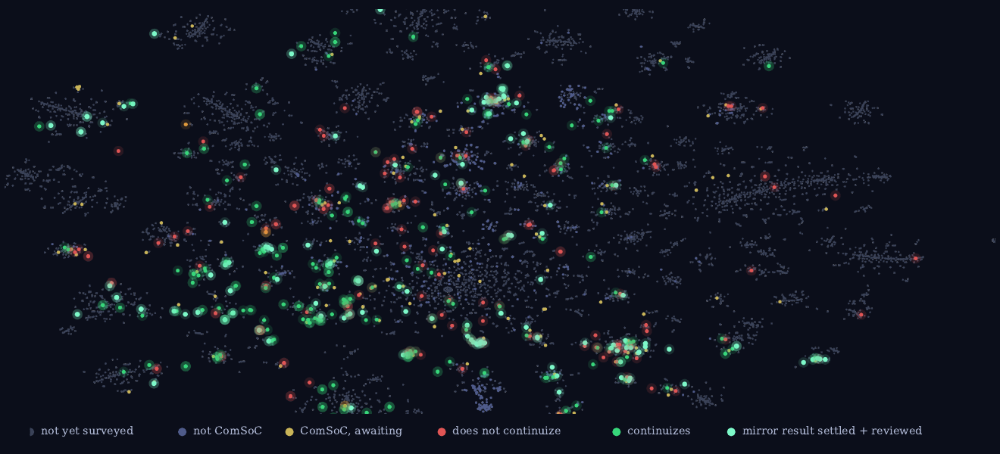

the continuous mirror of computational social choice, and the pipeline that charts it
Not always. Sometimes the continuous problem is as hard as the original, and that is the interesting case.
A question that is the same for every paper is a question a machine can ask six hundred times, with a proof attempt attached.
Every stage is a model run with its full transcript kept. I check the judgments before the pipeline advances.
| Sco | Bor | dAp | Cnd | Buc | Kem | Sla | Dod | You | |
|---|---|---|---|---|---|---|---|---|---|
| Winner | |||||||||
| Shift bribery | ★ | ||||||||
| Swap bribery | |||||||||
| $Bribery | |||||||||
| Control | |||||||||
| ⋮ | ⋮ | ⋮ | ⋮ | ⋮ | ⋮ | ⋮ | ⋮ | ⋮ | ⋱ |
